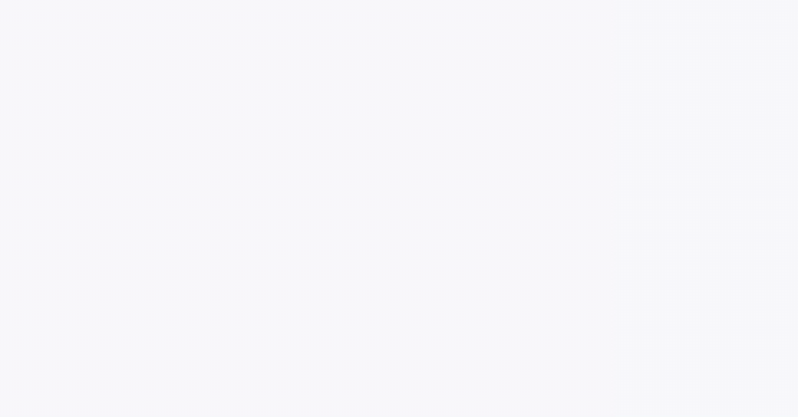
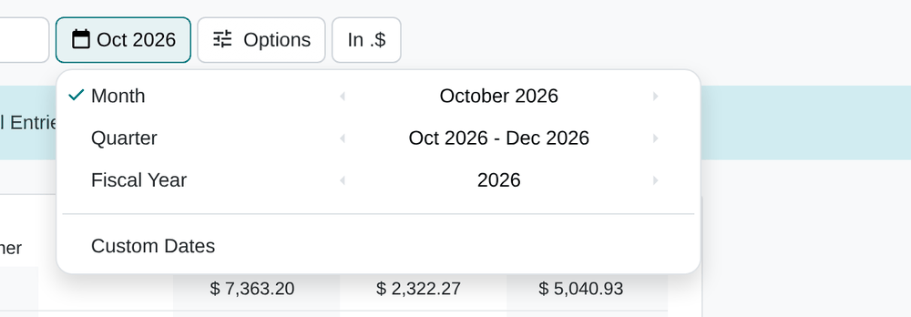
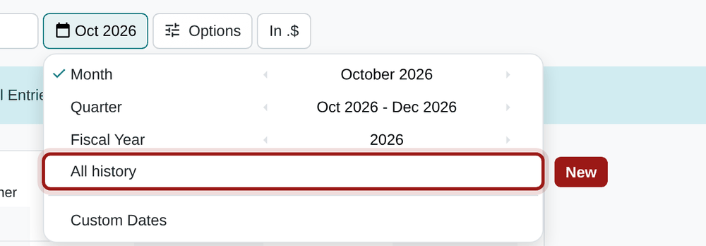
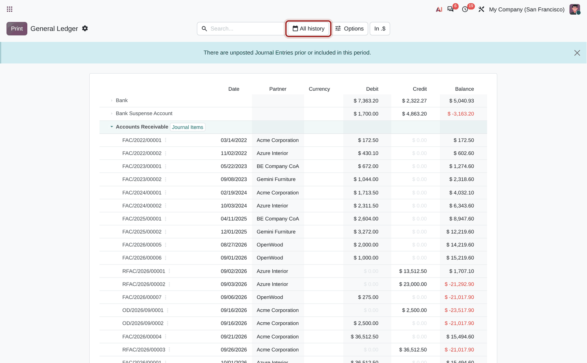
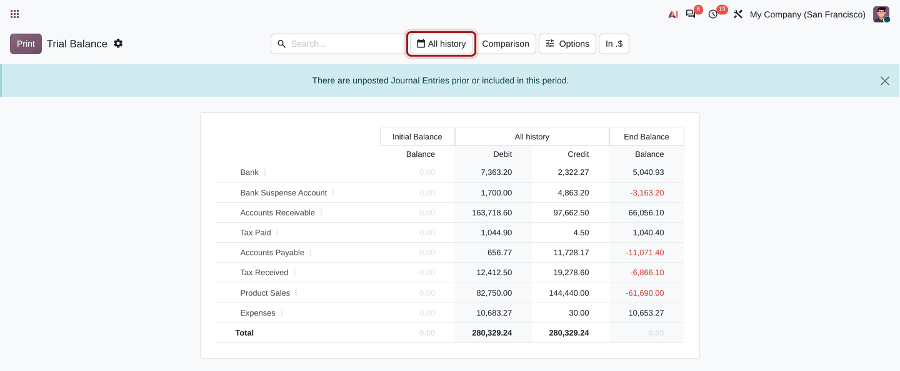
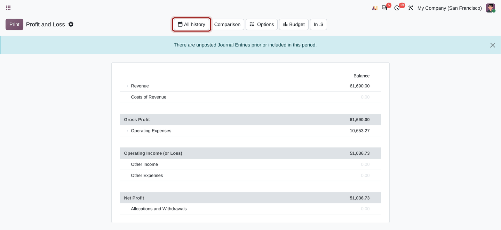
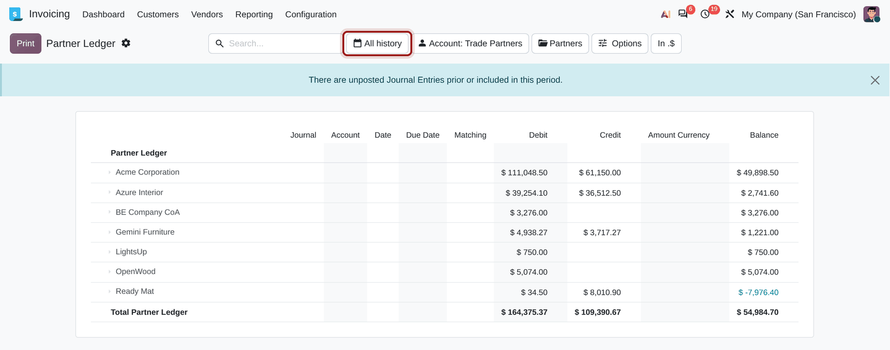

Show every journal item since day one in the general ledger, trial balance, profit and loss and partner ledger. One click in the date filter, no dates to type.

General ledger: open the date filter, pick All history, the receivable account now starts with its very first invoice.
The date filter of the Odoo accounting reports offers month, quarter, year and custom dates. To audit an account, reconcile an old partner balance or answer an accountant's question, you need its whole history, and that means guessing the date of the first entry and typing two dates by hand. Every time.
This module adds the missing entry: All history.
A new entry in the date filter of every period report, right after Year.
The range runs from the first to the last journal item and is recomputed on every reload: a new entry, even dated in the past, is never left out.
No model, no setting, no data written. Uninstall it and the reports are exactly as before.


Accounting › Reporting › General Ledger, Trial Balance, Profit and Loss, Partner Ledger…
The entry sits between Year and Custom Dates.
The report covers every journal item. The date button and the column header say All history, and the other filters (journals, posted entries, comparison) keep working as usual.

Initial balance at zero, every movement since the first entry.

The result of the whole life of the company.

Every customer and vendor balance, from their first invoice.

Reports that show a balance at a date (balance sheet) do not list the entry: they already include everything up to their date. If you switch to one of them while All history is selected, it simply opens at today's date.
| Odoo version | ✓20.0 |
| Edition | ✓Enterprise (the accounting reports are an Enterprise feature) |
| Odoo.sh | ✓Yes |
| On-premise | ✓Yes |
| Odoo Online (SaaS) | ✗No: Odoo Online does not accept custom modules |
| Multi-company | ✓Yes: the range covers the companies selected in the company switcher |
Depends on account_reports only. Versions also available: Odoo 18, 19 and 20.